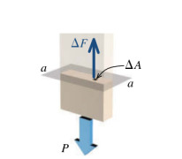

Gerilme Tensörü (Strain Tensor)
Önce nesneleri nasıl temsil ettiğimizden bahsedelim. Diyelim ki elimizde bir patates var. Fakat bu patatesin matematiksel olarak bir anlamı yok. Eğer bu nesneyi $R^3$ uzayında temsil etmek istiyorsak, onun üzerindeki belli seçilmiş noktalar sayesinde bunu yapabiliriz.
Nesne uzerindeki mavi noktalar bu secilmis noktalari gosteriyor.
Secilmis noktalarin kordinati bir referansa gore alinmali, $e_1,e_2,e_3$ seklinde bir baz bu isi yapabilir.

[devam edecek]